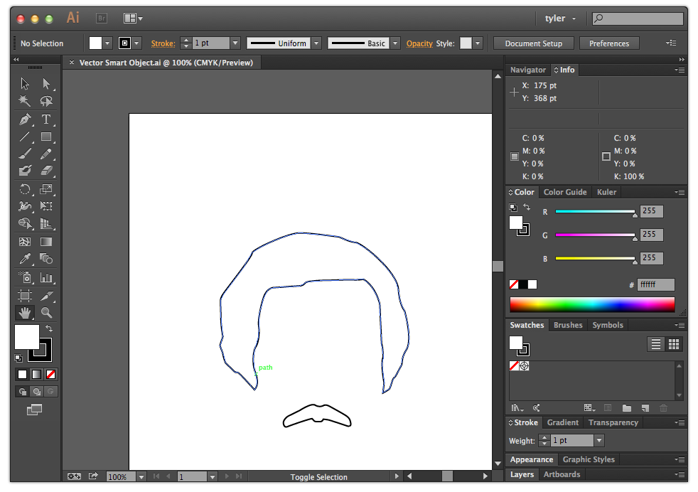

Vector graphics that don't care about your screen resolution.
Truly responsive icons.
Animations, either with CSS, JS or SVG's own internal animation specification.
| IE | Firefox | Chrome | Safari | Opera | iOS Safari | Android | IE Mobile |
|---|---|---|---|---|---|---|---|
| 9+ | 26+ | 31+ | 7+ | 19+ | 3.2+ | 3+ | 10+ |
source: can i use
Here's a circle:
<svg width="100" height="200">
<circle fill="red" r="50" cx="50" cy="100" stroke="black" stroke-width="3">
</svg>More shapes:
<svg width="500" height="200">
<circle fill="red" r="50" cx="50" cy="100" />
<rect fill="blue" x="125" y="50" width="100" height="100" />
<rect fill="green" x="250" y="50" width="100" height="100" rx="15" ry="15" />
<polygon fill="purple" points="375,150 425,50 475,150"/>
</svg>Here's a path:
<svg width="400" height="400">
<path d="M 100 100 L 300 100 L 200 300 z"
fill="orange" stroke="black" stroke-width="3" />
</svg>(use vector Smart Objects in Photoshop)
Profile: SVG 1.1, or SVG Tiny 1.1 if you don't have complex graphics like gradients, animations or embedded images.
Fonts: Convert to outline will convert any text to vector outlines.
1 <?xml version="1.0" encoding="utf-8"?> 2 <!-- Generator: Adobe Illustrator 17.1.0, SVG Export Plug-In . SVG Version: 6.00 Build 0) --> 3 <!DOCTYPE svg PUBLIC "-//W3C//DTD SVG 1.1//EN" "http://www.w3.org/Graphics/SVG/1.1/DTD/svg11.dtd"> 4 <svg version="1.1" id="Layer_1" xmlns="http://www.w3.org/2000/svg" xmlns:xlink="http://www.w3.org/1999/xlink" x="0px" y="0px" 5 viewBox="0 0 612 792" enable-background="new 0 0 612 792" xml:space="preserve"> 6 <path fill="none" stroke="#000000" stroke-width="2" stroke-miterlimit="10" d="M177.044,388.208c0,0-21.826-24.46-23.707-24.46 7 s-3.01,0.376-4.516-1.129c-1.505-1.505-12.418-12.042-12.418-12.042s-2.634-6.397-3.387-10.913 8 c-0.753-4.516-4.516-12.418-4.516-13.547c0-1.129,4.139-12.794,4.139-12.794s-3.01-12.418-3.01-33.115 9 c0-20.697-3.763-17.686,9.408-34.996s33.868-44.028,34.62-49.296c0.753-5.268,50.425-28.223,66.983-28.223 10 s51.178,5.268,53.812,5.268c2.634,0,13.171,6.774,25.965,8.279c13.547,4.892,57.199,41.77,59.08,65.854s8.655,28.976,9.031,31.233 11 c0.376,2.258,10.913,39.136,2.258,53.435c-8.655,14.3-4.139,17.31-7.902,23.707c-3.763,6.397-6.774,13.923-9.408,15.805 12 c-2.634,1.882-4.892,13.547-6.397,15.429s-9.408,6.021-9.408,6.021s1.882-13.171,1.505-15.429s-4.892-27.47-1.129-34.996 13 c-0.376-7.526-0.376-12.794-2.258-19.192c-0.376-9.031-2.258-47.415-2.258-52.683c0-5.268-7.526-28.976-23.331-37.631 14 c-3.01,0.376-7.526,1.129-15.052,0.753c-7.526-0.376-29.728,0.753-38.383,0.753c-8.655,0-23.331,1.129-26.718,2.634 15 c-3.387,1.505-3.01,4.892-10.913,5.268c-7.902,0.376-31.233,2.258-34.244,2.258c-3.01,0-11.289,1.129-15.805,16.181 16 c-4.516,15.052-7.15,30.104-6.021,38.383s0,22.202-4.139,28.599c-4.139,6.397-4.516,22.955-2.258,31.233 17 C178.925,367.135,184.946,378.8,177.044,388.208z"/> 18 <path fill="none" stroke="#000000" stroke-width="2" stroke-miterlimit="10" d="M262.183,409.704 19 c3.706,2.321,8.561,2.634,11.948,0.611c3.387-2.023,8.655,1.223,8.655,1.223s16.557,9.031,21.355,12.042 20 c4.798,3.01,7.338,5.127,8.279,11.76c0.941,6.632-6.397,3.293-6.397,3.293s-21.12-7.056-24.037-7.808s-8.091-1.223-8.091-1.223 21 s-1.505,3.293-3.34,3.293c-1.835,0-3.81,0-6.962,0c-3.152,0-3.01-2.164-5.645-4.045c-3.01,0-30.481,9.408-34.62,11.289 22 c-4.139,1.882-5.645-3.01-5.645-5.645c0-2.634,3.01-7.15,7.15-9.408l15.758-7.761C240.592,417.325,257.15,406.553,262.183,409.704z" 23 /> 24 </svg>
1 <?xml version="1.0" encoding="utf-8"?> 2 <!-- Generator: Adobe Illustrator 17.1.0, SVG Export Plug-In . SVG Version: 6.00 Build 0) --> 3 <!DOCTYPE svg PUBLIC "-//W3C//DTD SVG 1.1//EN" "http://www.w3.org/Graphics/SVG/1.1/DTD/svg11.dtd"> 4 <svg version="1.1" id="Layer_1" xmlns="http://www.w3.org/2000/svg" xmlns:xlink="http://www.w3.org/1999/xlink" x="0px" y="0px" 5 viewBox="0 0 612 792" enable-background="new 0 0 612 792" xml:space="preserve"> 6 <path fill="none" stroke="#000000" stroke-width="2" stroke-miterlimit="10" d="M177.044,388.208c0,0-21.826-24.46-23.707-24.46 7 s-3.01,0.376-4.516-1.129c-1.505-1.505-12.418-12.042-12.418-12.042s-2.634-6.397-3.387-10.913 8 c-0.753-4.516-4.516-12.418-4.516-13.547c0-1.129,4.139-12.794,4.139-12.794s-3.01-12.418-3.01-33.115 9 c0-20.697-3.763-17.686,9.408-34.996s33.868-44.028,34.62-49.296c0.753-5.268,50.425-28.223,66.983-28.223 10 s51.178,5.268,53.812,5.268c2.634,0,13.171,6.774,25.965,8.279c13.547,4.892,57.199,41.77,59.08,65.854s8.655,28.976,9.031,31.233 11 c0.376,2.258,10.913,39.136,2.258,53.435c-8.655,14.3-4.139,17.31-7.902,23.707c-3.763,6.397-6.774,13.923-9.408,15.805 12 c-2.634,1.882-4.892,13.547-6.397,15.429s-9.408,6.021-9.408,6.021s1.882-13.171,1.505-15.429s-4.892-27.47-1.129-34.996 13 c-0.376-7.526-0.376-12.794-2.258-19.192c-0.376-9.031-2.258-47.415-2.258-52.683c0-5.268-7.526-28.976-23.331-37.631 14 c-3.01,0.376-7.526,1.129-15.052,0.753c-7.526-0.376-29.728,0.753-38.383,0.753c-8.655,0-23.331,1.129-26.718,2.634 15 c-3.387,1.505-3.01,4.892-10.913,5.268c-7.902,0.376-31.233,2.258-34.244,2.258c-3.01,0-11.289,1.129-15.805,16.181 16 c-4.516,15.052-7.15,30.104-6.021,38.383s0,22.202-4.139,28.599c-4.139,6.397-4.516,22.955-2.258,31.233 17 C178.925,367.135,184.946,378.8,177.044,388.208z"/> 18 <path fill="none" stroke="#000000" stroke-width="2" stroke-miterlimit="10" d="M262.183,409.704 19 c3.706,2.321,8.561,2.634,11.948,0.611c3.387-2.023,8.655,1.223,8.655,1.223s16.557,9.031,21.355,12.042 20 c4.798,3.01,7.338,5.127,8.279,11.76c0.941,6.632-6.397,3.293-6.397,3.293s-21.12-7.056-24.037-7.808s-8.091-1.223-8.091-1.223 21 s-1.505,3.293-3.34,3.293c-1.835,0-3.81,0-6.962,0c-3.152,0-3.01-2.164-5.645-4.045c-3.01,0-30.481,9.408-34.62,11.289 22 c-4.139,1.882-5.645-3.01-5.645-5.645c0-2.634,3.01-7.15,7.15-9.408l15.758-7.761C240.592,417.325,257.15,406.553,262.183,409.704z" 23 /> 24 </svg>
<embed>background<svg><embed>A good way not to clutter your page with svg, but:
backgroundCSS background rules can take SVG markup in a data-uri string:
background-image: url("data:image/svg+xml;utf8,")
me has background
backgroundPros:
Cons:
<svg>The elements live on the page with the rest of your page so you can:
<svg width="500" height="200">
<circle fill="red" r="50" cx="50" cy="100" />
<rect fill="blue" x="125" y="50" width="100" height="100" />
<rect fill="green" x="250" y="50" width="100" height="100" rx="15" ry="15" />
<polygon fill="purple" points="375,150 425,50 475,150"/>
</svg>.css-1 rect:hover {
fill: black;
}<svg class="css-2" width="200" height="200">
<circle fill="red" r="50" cx="50" cy="100" />
<polygon points="375,150 425,50 475,150"/>
<defs>
<linearGradient id="Gradient">
<stop offset="5%" stop-color="#F60" />
<stop offset="95%" stop-color="#FF6" />
</linearGradient>
</defs>
</svg>.css-2 rect, .css-2 polygon {
fill: url(#Gradient);
}Some more advanced and practical CSS examples:
circle {
fill: none;
stroke: $color_blue;
stroke-width: 2px;
opacity: 0;
transition: opacity 2s, transform 2.5s ease-in-out;
/* each circle has its own translate position off-screen */
transform: translate(-300px, -400px);
}
.in-view circle {
transform: translate(0px, 0px);
}var paths = d.querySelectorAll('.anchorman path');
for (var i = 0; i < paths.length; i++) {
var path = paths[i];
var length = path.getTotalLength().toString()
path.setAttributeNS(null, 'stroke-dasharray', length + ' ' + length);
path.setAttributeNS(null, 'stroke-dashoffset', length);
var anchor = document.getElementById('anchor' + (i + 1))
anchor.setAttributeNS(null, 'from', length);
anchor.setAttributeNS(null, 'values', length + ';0');
}
var animate = function() {
document.getElementById('anchor1').beginElement()
document.getElementById('anchor2').beginElement()
};If you're working with data, check out D3.js, a javascript library for working with data that uses SVG for graphs, maps, diagrams.